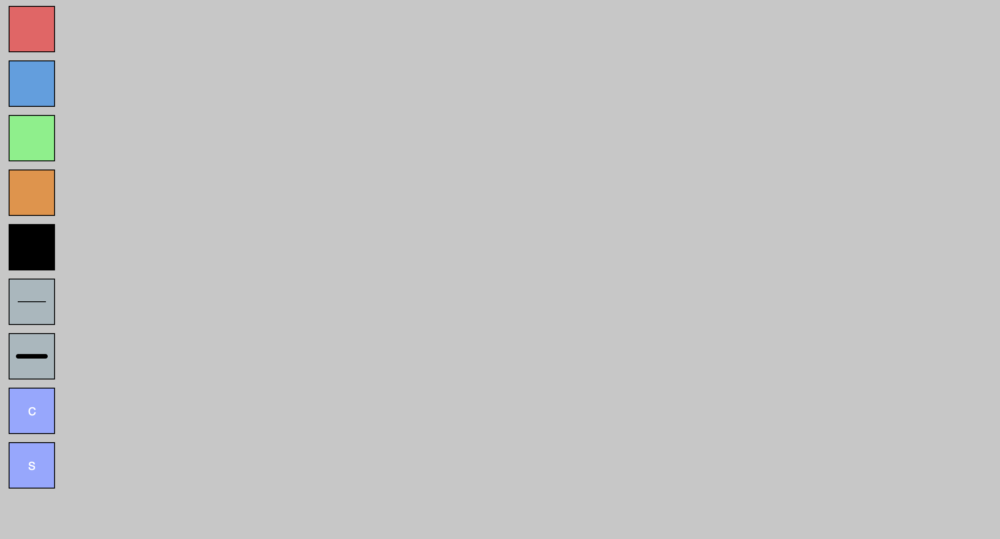
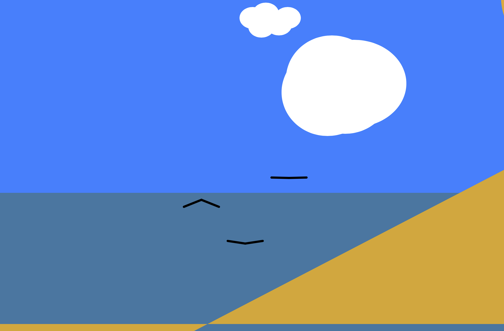
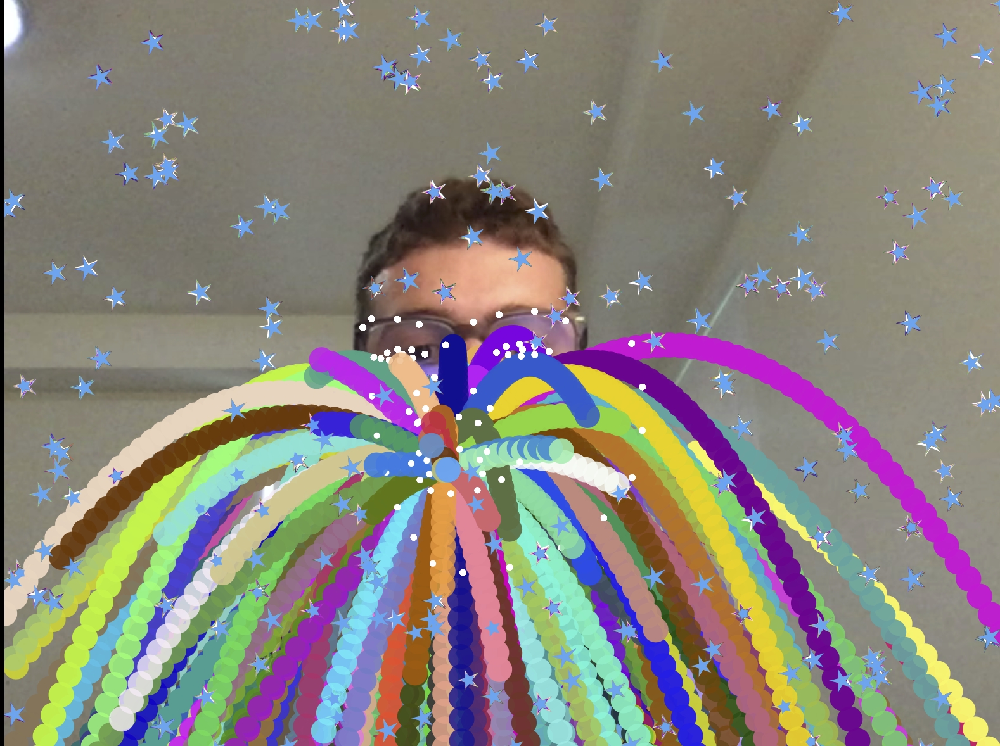
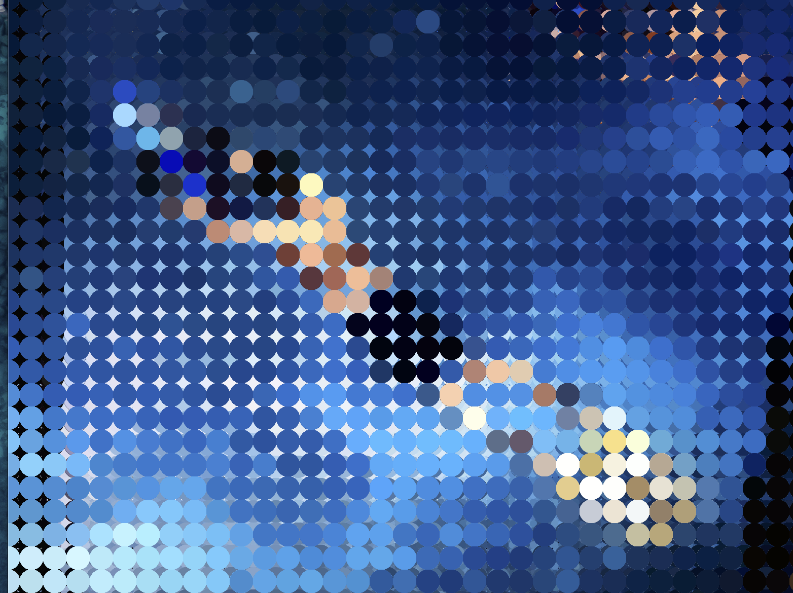

Landscape
In this interpretation of the Multnomah Falls painting, I tried to create a copy via p5
 Interface
Interface
This interface allows the user to draw what they want. With five different colors to pick from, each color allows the user to interact with a type of brush. When drawing, hold the following keys for cool brushes: Q, E, A, Command

Animation
This is a fun little animation that resembles the classic beach day. However, the sand appears more abstract to imitate how unique and creative one's imagination can be at the beach.

Machine_Gaze
The Machine Gaze offers a color explosion filter that resembles the likes of a Snapchat filter, and fills the screen with twinkling stars and explosive color. My goal was to overwhelm the user with color and surprise them so that it would give them something fun to do.

Final Project
For my final project, I created a webcam filter. The filter is a two in one filter for your webcam and personal use. By moving the mouse left to right, you can control the size of the pixels on the video. If you click the mouse, you can change the color of the video. I was inspired to create this because Snapchat and Instagram are around us everyday. Everyone is always editing colors and applying filters to their selfies, pictures or videos. My goal was to make this filter unique and different from other filters I have seen on social media
